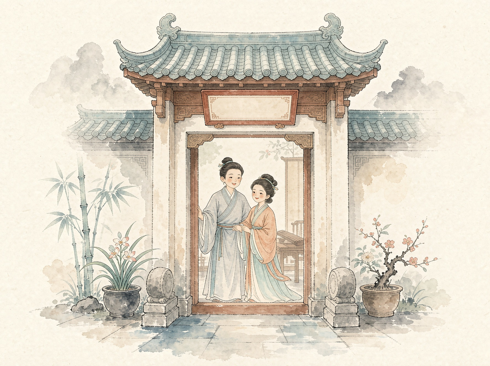
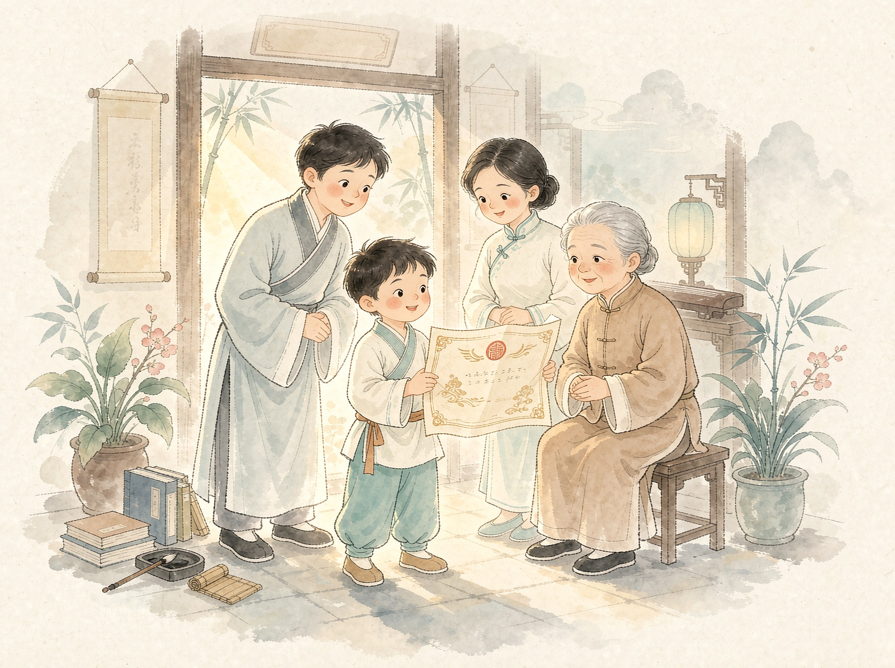

扬名声，显父母：承接上一课「上致君，下泽民」，说「行」之效。
扬，显扬、传播；名声，声誉；显，使之显荣；父母，爹娘。
古人以「显亲」为孝之极：己之德行足以荣及父母，是孝之至。
扬为阳、为外显，显为阴、为内荣。
对比：上致君，下泽民 / 扬名声，显父母
上句言所施之处，此句言所归之处。施于公者，亦荣于私；公与私，在此不是二事。
对比前文阴阳太和：名声与德行，须相称。名过其实，则显为虚荣，反为父母之累；德称其名，则荣为实。故古人重「实至名归」，不重「名先实后」。
勘破俗见：两类常见偏差。其一，为「显父母」而求名，把孝变成向外争胜；其二，把「显父母」当作旧礼，以为今日不必言。契合般若范式：佛说名声父母，即非名声父母，是名名声父母。名是假名，显是相；实德为本，名为末。执末为本，则孝成累。
一个人做得好，名声会传出去。
别人会说：这是谁家的孩子，教得好。
父母听了，心里是暖的。
不过，名声是跟着做出来的事走的。
事做得好，名声才稳；只为名声去做，就不稳了。


落到心上理解
「泽民」如何不滑为「代民作主」？
守住「不夺其能」。帮人时问一句「这事你自己能不能做」，能则退一步，不能则补一手。补手而不代手，泽乃真泽。
「显父母」三字，最易被误读为「为父母争脸」。其实所显者是「德」，不是「分」。孩子若只为分数争脸，父母之荣薄；若因品行见称，父母之荣厚。
不求虚名，不废其实；以德显亲，即是无住。
显父母就是给父母争面子、比排场
是以德行使人敬其家教，非以名位比高低
名声越大越好，越早越好
名须称实；名过其实，反累其亲
这是旧礼，今日不必再谈
其义可移：己之为人，即是家之门面
一、勘俗见。别把「显父母」译成「考第一给爸妈长脸」。译成「你的为人，就是家的门面」，孩子才不被名次绑架。
二、现代对照。孩子做了体面的事（让座、认错、守信），明确说一句「这让我觉得咱家教得好」。
三、承接常变主线。名声之起落（可变之相）；德行称实（不变之常）。
四、承接教与学二分。父母能给家教之基；其为人如何，只能自树。
承接选择力练习：做一件「不必让人知道、但父母知道会安心」的事。
字义与句读
扬：显扬。名声：声誉。显：使之显荣。父母：爹娘。
全句释义：显扬自己的名声，使父母因之而荣显。
二命题考辨
表层因缘
此句是「壮行」的第二效：前效在公（致君泽民），此效在私（显父母）。蒙学并置二者，示「公成而私荣」，非以私废公。
深层因缘
「显父母」在古代孝道中居于高位，《孝经》有「立身行道，扬名于后世，以显父母」之语。其前提极严：先「立身行道」，后「扬名」。无道之名，不足显亲。
现代对照认知
今日之「显」，可解为「使人因其人而敬其家」。此为最朴素的家族声誉机制：一个人的品行，是其家教的公开证据。
般若范式互参
名、声、父、母，皆是因缘假名。
联动三才五蕴太极空杯模型：立身之心是杯中之空，空则能容德；名声与家世是器相，器有华朴。器华而空塞，则名虚。
呼应「本乎数」：一事之实，其数一；百事之实，其数百；数积而后名立。
延伸义理：
《金刚经》：若有人以满三千大千世界七宝用布施……以德显亲，胜于以财显亲。
《道德经》：功成而弗居。名成而不居，名乃久。
三跨典互参（老庄、般若对照）
《道德经》：善建者不拔，善抱者不脱。德立而后名不摇。
《庄子》：名者，实之宾也。名是宾，实是主；宾不可僭主。
串联前文：由公之效，转私之荣；行之所归，至此俱陈。
四和前面课程的张力
次第链条继续延伸：
……上致君，下泽民 → 扬名声，显父母
呼应「首孝悌」：显亲是孝之至，然其根在立身；
呼应「教之道，贵以专」：专于德，名乃随之；
呼应「玉不琢，不成器」：器成而显其纹——纹美者，人皆知其为良材。
「显父母」与「为自己争名」如何分辨？
名声过实之时，古人何以宁退而不进？
今日家族声誉，其建立与毁坏的速度为何远快于古？